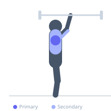
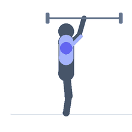

Exercise guide / Swiss Bar Overhead Press
Swiss Bar Overhead Press
The Swiss bar overhead press uses a multi-grip bar to press overhead with the hands in a neutral (palms facing each other) or semi-pronated grip, reducing the degree of shoulder external rotation required at the bottom position compared to a standard straight barbell. This reduces impingement risk in athletes with limited shoulder mobility or existing rotator cuff irritation while still allowing heavy overhead pressing loads. The neutral grip also shifts some emphasis toward the anterior deltoid and long head of the triceps.
Primary muscles
deltoid anterior
deltoid lateral
Secondary muscles
triceps brachii
trapezius upper
Stabilizers
erector spinae
transverse abdominis
Equipment
Lat Pulldown Machine
No Equipment (Bodyweight)


Starting position
- Set the Swiss bar in a rack at upper-chest height. Grip the neutral handles. Unrack and hold at shoulder height with elbows slightly forward of the bar.
Setup
- Set up like a standard overhead press. The neutral grip handles will be at approximately shoulder width.
Steps
- Step 1: Begin with the bar at shoulder height, elbows forward.
- Step 2: Press the bar straight overhead, extending the arms fully.
- Step 3: At lockout, the bar is directly over the base of the skull.
- Step 4: Lower under control back to the starting position.
- Step 5: Repeat.
Coaching cues
- Neutral grip — palms face each other
- Elbows slightly forward — 45 degrees from the torso
- Lock out fully overhead
Breathing
- Inhale and brace before pressing. Exhale at the top or through the press.
Range of motion
- Shoulder height to full overhead lockout.
Tempo
- 2-1-2-0
Common mistakes
- Flaring the elbows wide — with the neutral grip, elbows should stay close to 45 degrees from the torso
- Leaning excessively backward under load
Safety
- Learn the standard barbell overhead press before switching to the Swiss bar
- Use for rehabilitation from shoulder impingement — the neutral grip is gentler on the glenohumeral joint
Training
- strength: 3–6 reps
- hypertrophy: 6–12 reps
- strength: 3–5 sets
- hypertrophy: 3–4 sets
- Rest: {'strength': 240, 'hypertrophy': 90}